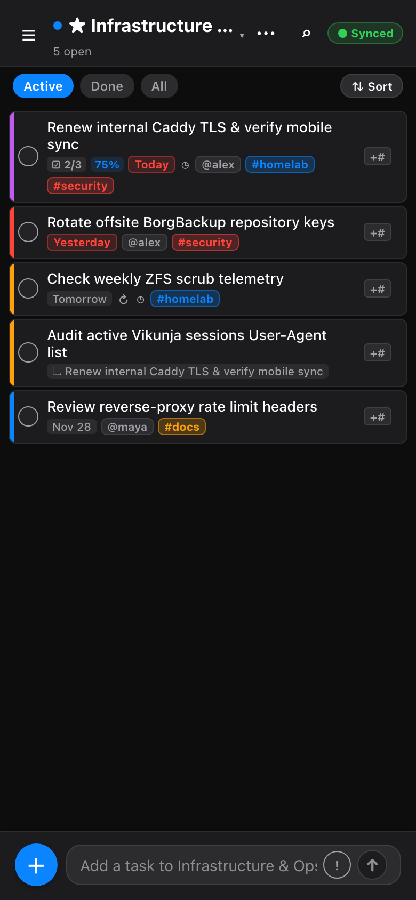
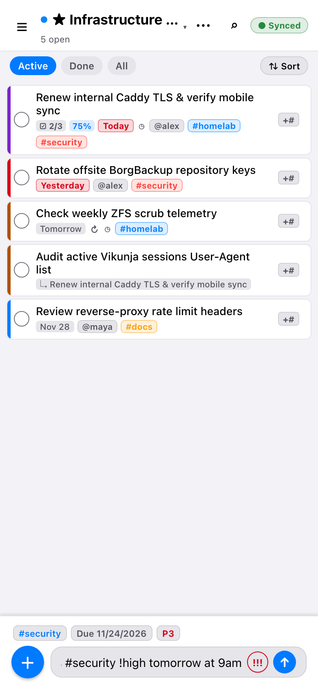
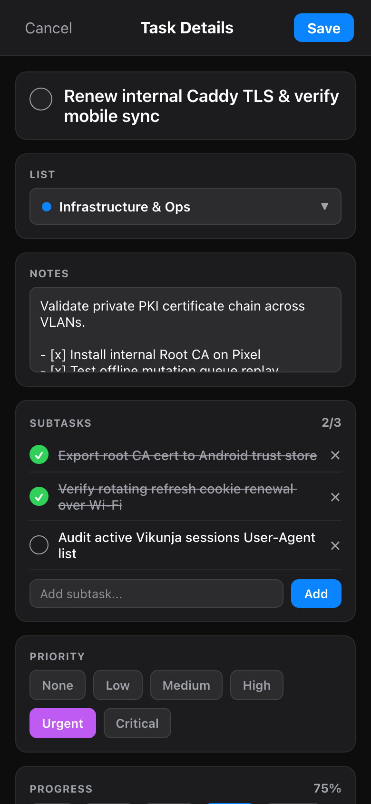
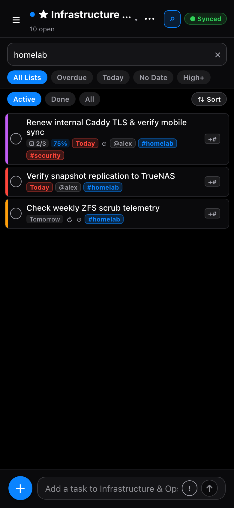
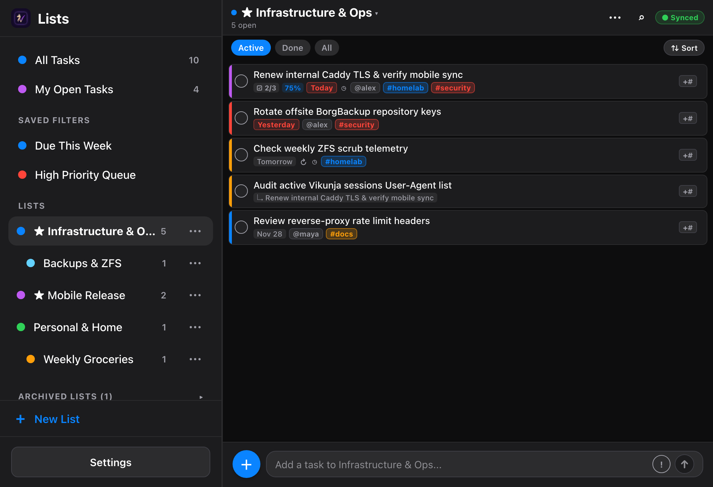

Works Offline
Add tasks, check off errands, edit notes, and reorder lists without a connection. Everything syncs automatically once you're back online.
A fast, private app for Android, iPhone, iPad, and tablets that connects directly to your Vikunja server — and keeps working smoothly even when you're offline.




Designed to feel effortless on your phone while staying completely faithful to your Vikunja lists, filters, and notes.
Add tasks, check off errands, edit notes, and reorder lists without a connection. Everything syncs automatically once you're back online.
Break big projects into subtasks with progress counts, duplicate task templates, and open your Vikunja Saved Filters from the sidebar.
Read and edit formatted Vikunja notes and checklists cleanly on mobile, and search across all your lists by title, note, label, or assignee.
Postpone tasks in one tap, set custom repeat intervals, and mark tasks done or snooze them directly from local notifications.
Pick Light, Dark, or pure black OLED mode, and scale task card size and text size separately for comfortable reading.
Connects straight to your server with support for two-factor login, API tokens, custom home-server certificates on Android, and biometric app lock.
Type naturally in the bottom bar — dates, tags, lists, and priorities are recognized automatically as you type.
| To Set | Type | Example |
|---|---|---|
| Labels | #tag or #"two words" |
Pay electric bill #home #bills |
| Target List | +List or +"List Name" |
Coffee beans +"Weekly Groceries" |
| Priority | !1–!5 or !low to !critical |
Renew passport !high |
| Due Date & Time | today, tomorrow, next fri, in 3 days, at 5pm |
Send invoice tomorrow at 9:30am |
| Repeat | every [N] hours/days/weeks/months/years |
Water plants every 4 days |
| Assignee | @username |
Review trip checklist @alex |
On wider screens, Guanaco keeps your lists, sublists, and Saved Filters open right alongside your tasks.

Yes. Your lists and tasks stay available on your phone so you can add, check off, edit, and reorder items offline. Your changes sync automatically as soon as your server is reachable again.
Yes. On Android, install your root certificate in the system CA certificate settings and Guanaco will trust your private HTTPS connection automatically.
Never. Guanaco talks only to your Vikunja server, includes no analytics or ads, and schedules all reminders locally on your device.
Create a Personal API Token in Vikunja Web under Settings → API Tokens and paste it into the API Token tab on Guanaco's sign-in screen.